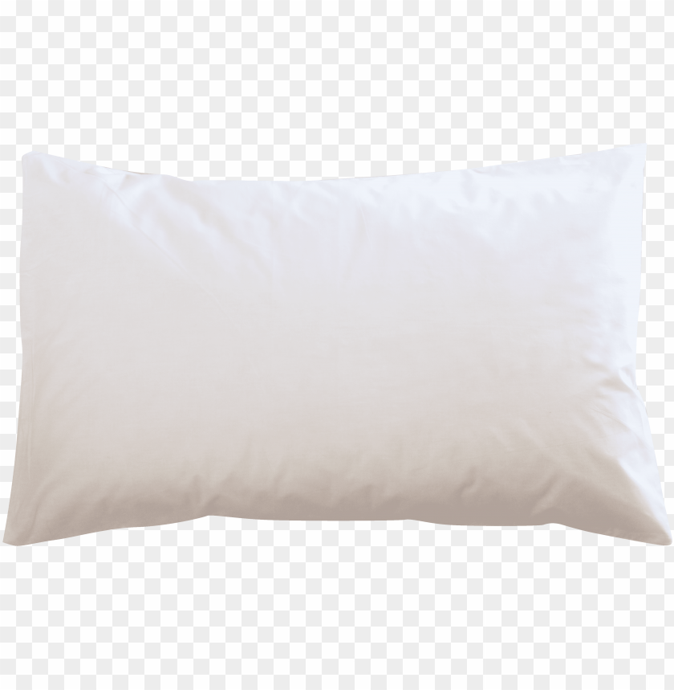

CASE STUDY BETWEEN GOOGLE LENS AND MOBILENET
GOOGLE LENS 
VS
MOBILENET
GOOGLE LENS
VS
VS
MOBILENET
1.Test Image- 
GOOGLE LENS Result- Vans Old Skool
VS MOBILENET Result- Shoes
Google Lens is more accurate
2.Test Image- 
GOOGLE LENS Result- Stainless steel waterbottle
VS MOBILENET Result- Blue waterbottle
Both are accurate
3.Test Image- 
GOOGLE LENS Result- UiMaster headphones
VS MOBILENET Result- Black headphones
Google lens is more accurate
4.Test Image- 
GOOGLE LENS Result-
VS MOBILENET Result-